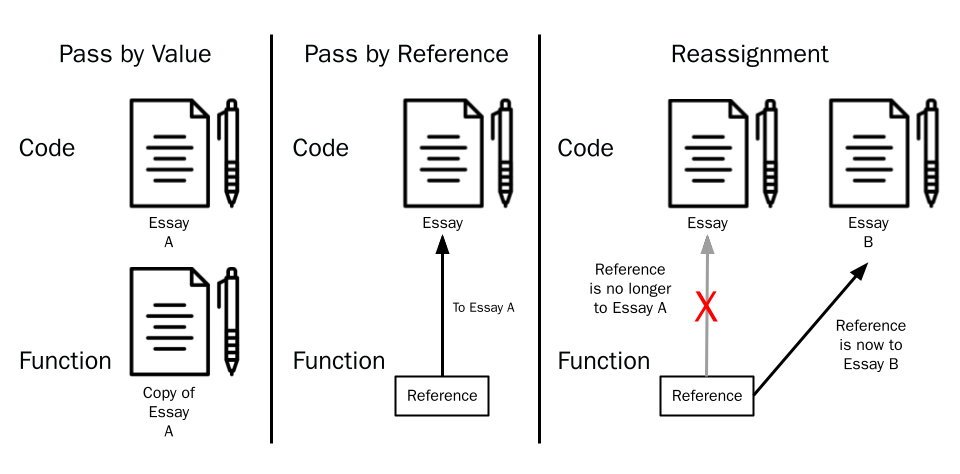
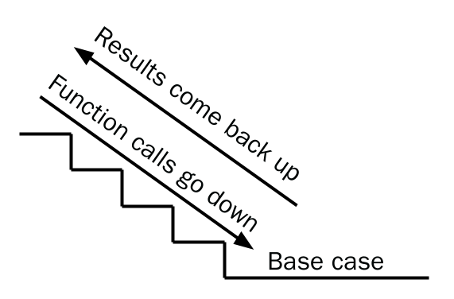
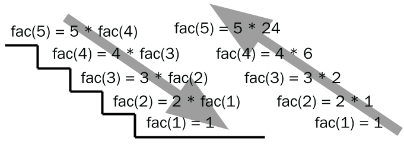

Return STEM;
Introduction to Python
Prelude: style
What are functions?
Abstraction
Declaring functions
Calling functions
Function parameters
Return values
Using Functions in your Code
Recursion
Practical Application: Date Converter
Vocabulary
Python Concepts
Functions
This guide is still under development. We'll be overhauling the Introduction to Python content in the next few months. Stay tuned for more changes and better tutorials!
~ The Return STEM team
Prelude: style
The style of a program is how it looks. This affects the code's readability. Code should be easy to read and look good so it's easier to expand and improve in the future.
Look at the programs below: which one looks easier to read?
# Example 1
MyVeryLongVariableName = 0
while True:
if not MyVeryLongVariableName < 5: break
MyVeryLongVariableName += 1; print(“hello”);
print(“world”)
# Example 2
i = 0
while i < 5:
i += 1
print(“hello”)
print(“world”)
Despite producing the same output, the code in Example 1looks less complicated and therefore easier to read
Output:
>>> hello
>>> hello
>>> hello
>>> hello
>>> hello
>>> world
Most programming languages come with style guides that tell you how to format your code.
The style guide for Python is called PEP-8, and you can access it here
PEP-8 goes into very fine details about Python--don't worry if you can't understand all of it yet!
Readable code is important for other people to know what your code does
What are functions?
Functions are pieces of code that can be called, or asked to run, from a program
You have already used many functions, such as print, input, and len. These functions we have been using are actually very complex pieces of code.
However, since we are only interested in using them, we don't have to worry about what makes these functions work--we simply follow the guidelines on how to use them.
This is what makes functions so powerful--we can perform complex actions without worrying about the details.
Similarly, these can help make code more organized and better stylistically In this lesson, you will learn how to write your own functions
Abstraction
- Abstraction is an important concept when talking about functions
- Abstraction involves hiding away unnecessary details and "inner workings"
- This concept of abstraction is explored all over the real world in products we own
- You probably have a microwave in your kitchen
- You need to know that to cook food, you enter the time/power and press start
- You do not need to know how the microwave takes power from the wall and cooks your food with it
- We can say that the details of how the microwave works have been abstracted away from the user
- You probably have a microwave in your kitchen
- Functions follow the concept of abstraction as well
- Details of how the function works have been abstracted away
- You only need to know how to use the function, not how it works
- Details of how the function works have been abstracted away
Declaring functions
Functions can be declared in Python using the def keyword. This keyword lets Python know that:
- You are declaring a function (
def) - Your function's name is
my_function - Your function will have no parameters (the parenthesis have nothing in them) This line of code is called the function signature
def my_function():
Practice: Which function is declared correctly?
def add two numbers():def add_two_numbers():def add_two_numbers:def add_two_numbers()
Naming Functions
Function names follow the same rules as variable names--name them according to what they do.
Function names are often verbs, since they perform actions. Variable names are nouns because they represent things (data).
Practice: Naming Functions
Come up with names for the functions below:
- A function, which, given a number, finds whether the number is prime or not
- A function, which, given a number, finds the factorial of that number
- A function that accepts someone's name as a parameter, and then greets that person.
- A function that sorts a given list
- A function that adds one to every value in a list
Calling functions
After declaring the function, you can write any code that will be run when the function is called. All code inside a function should be indented--this signifies that the code is inside the function, just like with if blocks.
Now you can run the code inside the function by calling it. To call a function, put its name followed by a set of parenthesis.
def my_function():
print("I am inside my_function")
When you call a function, Python will jump to where the function is defined and execute the code that is part of the function
def my_function():
print("I am inside my_function")
my_function()
>>> I am inside my_function
You can call a function multiple times. Your function can have any amount of any valid Python code. This means that your function can have:
- Loops
- Conditionals
- Functions (including itself)
- Anything else
def count_to_5_evens():
for i in range(0, 5):
if i % 2 == 0:
print(i)
print("First time")
count_to_5_evens()
print("Second time")
count_to_5_evens()
>>> First time
>>> 0
>>> 2
>>> 4
>>> Second time
>>> 0
>>> 2
>>> 4
Function parameters
Functions can also have parameters (input for the function). When you give them values, they are called arguments. Parameters give functions more specific instructions or tell it to calculate with certain values with parameters. Parameters are defined by including them inside of the parenthesis:
def count_to_n_by_m(n, m):
# We can use n and m as parameters inside our function
Python differentiates the arguments you give it by the order. The first value you give it will be n and the second value you give it will be m:
def count_to_n_by_m(n, m):
for i in range(0, n + 1, m):
print(i)
# Count to 2 by 4
count_to_n_by_m(2, 4)
>>> 0
# Count to 4 by 2
count_to_n_by_m(4, 2)
>>> 0
>>> 2
>>> 4
Giving too little or too many parameters returns an error:
def count_to_n_by_m(n, m):
for i in range(0, n + 1, m):
print(i)
count_to_n_by_m(3, 3, 5) # Error, what to do with 5?
>>> TypeError: count_to_n_by_m() takes 2 positional arguments but 3 were given
count_to_n_by_m(1) # Error, what would m be then?
>>> TypeError: count_to_n_by_m() missing 1 required positional argument: 'm'
Optional Parameters
Functions can have optional parameters, which you can specify when declaring the function. Optional parameters don't need to have an order, so an example like this is acceptable:
def greet_me(name, times = 1, greeting = "Good Morning"):
for i in range(0, times):
print(f"{greeting}, {name}!"
greet_me("Sam", greeting = "Hello") # times still defaults to 1
>>> Hello, Sam!
Always put arguments which are positional in front of those which are non-positional (optional) arguments
greet_me("Sam", greeting = "Hello", times = 2) # This will work
>>> Hello, Sam!
>>> Hello, Sam!
greet_me(greeting = "Hello", "Sam", times = 2) # This will not
>>> SyntaxError: positional argument follows keyword argument
Return values
A function can also give back (return) a value. The input function is an example of a function that returns a string. We can then assign that returned value to a variable or give it to another function as an argument.
We can make a function return a value using the return keyword at the bottom of our function:
def add_two(num):
return num + 2 # returns a number 2 above num
x = add_two(5)
print(x)
>>> 7
Pass by Value
Integers, floats, booleans, and strings are primitive data types in Python. When one of these are passed to a function, the function gets a copy of what is passed in. This means if we change the copy, those changes will not affect the original variable we gave it:
# doesn't work since the function only got a copy
def double(num):
num *= 2
num = 10
double(num)
print(num)
>>> 10 # does not alter the original variable
If we wanted to change that variable, we could reassign it:
# return the value, then reassign
def double(num):
return num * 2
num = 10
num = double(num)
print(num)
>>> 20 # Alters the original variable
Pass by Reference
Non-primitive data types (everything else) are passed by reference. This means that the function receives a reference to the data we pass in. If we change (mutate) the argument, those changes will affect the original variable
# Pass by Reference - Mutating
def mutate(value):
value[0] = "new data"
my_val = ["test", "test", "test"]
mutate(my_val)
print(my_val)
>>> ["new data", "test", "test"]
However, if the argument is reassigned inside of the function, that reassignment is not carried over to the original variable we pass in.
# Pass by Reference - Reassignment
def reassign(value):
value = ["new data", "more data"]
my_val = ["test", "test", "test"]
reassign(my_val)
print(my_val)
>>> ["test", "test", "test"]
An analogy
Imagine that you're working on an essay with your friend. You already wrote some of it, and you want to give it to your friend for him to work on it.
I can give him a copy of my essay (pass by value). However, I wouldn't see any of the changes he makes unless he gives his edited copy back to me.
I can also tell him to read it and come to me (in room 104) whenever he wants to make a change (pass by reference). Any change he wants to make is immediately applied to the original copy of the essay.
However, if he decides to go to some other classroom (room 105), my essay would not be changed because I would not know what to change (he told someone else, and not me)

Using Functions in your Code
Aside from very simple programs with few lines, it is almost always useful to use functions in your program. Functions should be made to do specific tasks that can be reusable, and should be named accordingly with appropriate names.
Example: A function which triples a number should be called triple_number and not my_func
For example, let’s say that I define a function that can sort a list of integers:
def sort(arr):
for i in range(1, len(arr)):
key = arr[i]
j = i - 1
while j >= 0 and key < arr[j]:
arr[j+1] = arr[j]
j -= 1
arr[j+1] = key
If we didn't use functions, sorting two lists would look like this. Notice how much code we have to repeat here:
for i in range(1, len(some_list)):
key = some_list[i]
j = i - 1
while j >= 0 and key < some_list[j]:
some_list[j+1] = some_list[j]
j -= 1
some_list[j+1] = key
for i in range(1, len(another_list)):
key = another_list[i]
j = i - 1
while j >= 0 and key < another_list[j]:
another_list[j+1] = another_list[j]
j -= 1
another_list[j+1] = key
Conversely, we could use functions, which gets rid of a lot of repeated code and makes our code shorter overall:
def sort(arr):
for i in range(1, len(arr)):
key = arr[i]
j = i - 1
while j >= 0 and key < arr[j]:
arr[j+1] = arr[j]
j -= 1
arr[j+1] = key
sort(some_list)
sort(another_list)
Recursion
A recursive function is a function that calls itself. When a recursive function runs, it will call itself multiple times until a "base case" is reached. The base case doesn't have a recursive call and gives a definite value.
Think of a recursive function like a flight of stairs:
- You will go down the flight of stairs until you reach the floor
- After that, you will go back up, collecting each result using information from the previous step
- Each time a recursive function calls itself, we go down a step
- After that, we use the result we find at the bottom to evaluate each function until we reach the top again

Example
We can use recursion to solve the factorial. A factorial is defined like this:
For a number n, the factorial n is multiplied by every whole number less than n.
Factorials are represented by a !
5! = 5 4 3 2 1
7! = 7 6 5 4 3 2 1
To find the factorial of 5 (5!), we need to
- Evaluate
5 * 4 * 3 * 2 * 1 - Evaluate
4 * 3 * 2 * 1 - Evaluate
3 * 2 * 1 - Evaluate
2 * 1
This can be done with recursion:
fac(5) = 5 * fac(4) # Evaluate fac(4)
fac(4) = 4 * fac(3) # Evaluate fac(3)
fac(3) = 3 * fac(2) # Evaluate fac(2)
fac(2) = 2 * fac(1) # Evaluate fac(1)
fac(1) = 1 # Base case evaluates to 1

Practical Application: Date Converter
The following function returns the index that corresponds with the day of the week.
This example uses a dictionary, a data structure you haven't learned yet. It looks up the number based on the key (
"Sun","Mon", etc.)
def day_to_index(day):
translate = {
"Sun": 0,
"Mon": 1,
"Tue": 2,
"Wed": 3,
"Thu": 4,
"Fri": 5,
"Sat": 6
}
return translate[day]
meet_links = [link0, link1, link2, link3, link4, link5, link6]
x = input(“What day of the week is it?”)
print(meet_links[day_to_index(x)])
>>> What day of the week is it? Fri
>>> link5
Vocabulary
| Word | Definition |
|---|---|
| Function | Pieces of code that can be called from other parts of the code |
| Abstraction | Hiding away unnecessary details and the inner workings of the code |
| Parameters | Names listed in the function definition: def function(p) |
| Arguments | The actual values that are passed into a function def function(p) → function(5) |
| Recursion | A programming technique that involves functions that call themselves |
| Pass by Value | When you make a copy in the memory of the value of the passed argument |
Python Concepts
| Syntax | Definition |
|---|---|
def | Used to define a function |
return | Allows values to be returned from a function |